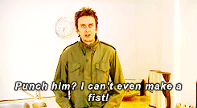

All-in-one natural hand controller interaction component for A-Frame.

Add the super-hands component to your tracked controller entities to enable these interactions:
Visit the Examples Page to see super-hands in action
The super-hands component should be added to same entities as your controller
component.
| Property | Description | Default Value |
| -------- | ----------- | ------------- |
| dropTargetClasses | Array of HTML classes for which collidable entities accept drag-drop interactions | [] (any entities accessible to the collider) |
| colliderState | Name of state added to entities your chosen collider | 'collided' (default for sphere-collider and physics-collider) |
| colliderEvent | Event that your chosen collider emits when identifying a new collision | 'hit' (default for sphere-collider and physics-collider) |
| usePhysics | If available, use physics system to move grabbed components | true |
A collider component must also be added to the controller entities, such as aframe-extras sphere-collider or the in-development, physics system-based physics-collider.
Super Hands works best with aframe-physics-system to manage grabbed entity movement, but it will fallback to manual position updates (without rotational translation) if physics is not available.
Install and use by directly including the browser files:
`html
<head>
<title>My A-Frame Scene</title>
<script src="https://aframe.io/releases/0.4.0/aframe.min.js"></script>
<script src="https://rawgit.com/wmurphyrd/aframe-super-hands-component/master/dist/super-hands.min.js"></script>
</head>
<body>
<a-scene>
<a-entity super-hands="foo: bar"></a-entity>
</a-scene>
</body>
`
Install via npm:
bash
npm install super-hands
Then require and use.
js
require('aframe');
require('super-hands');